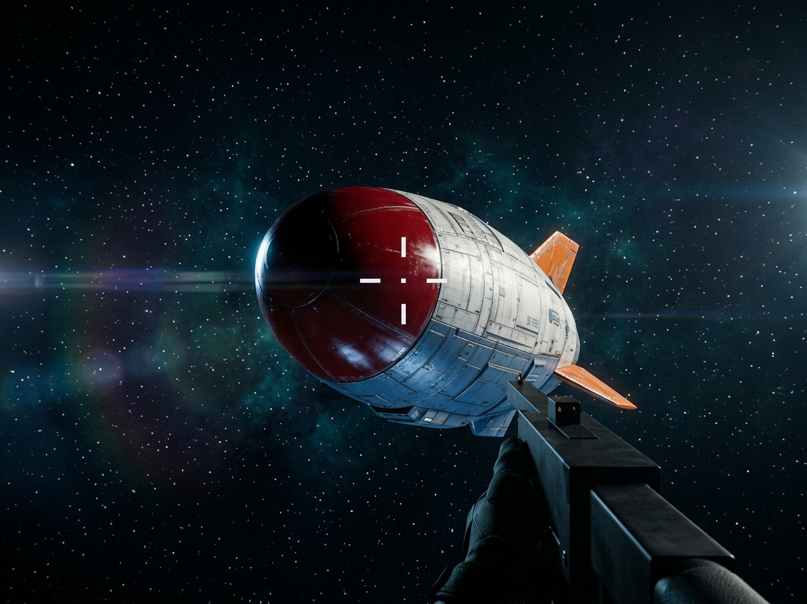

运行时改造的 UE6 游戏 × 生成式视频 · 实验记录
目标是把自动驾驶 episode 的游戏渲染升级成电影感成片。走 fal.ai 的 bytedance/seedance-2.0/reference-to-video 端点,双参考:@Image1 是 02 篇里 NB2(composition-locked v2)产出的编辑图,负责外观;@Video1 是 ep_0008 episode 的 2–7 秒切片(4:3 裁切),负责相机运动、构图和开火时序。参数 generate_audio=false(无音效)、duration=auto、resolution=1080p、aspect_ratio=4:3。两条约 $1。

v1 的 prompt 只描述外观与"跟随 @Video1 的相机运动/构图/开火时序";v2 在其上追加了逐帧几何冻结条款,其余不变。
把源 episode 切片以半透明方式叠回各自成片:画面里白色板材、橙色尾翼的是 Seedance 生成的船;呈暗红色半透明"幽灵"的椭球(带 HUD 准星)是游戏源船。两层重合度就是几何保真度。
Preserve the EXACT geometry of @Video1 in every frame: the airship's silhouette, proportions, scale and screen position must match @Video1 frame-by-frame. Only change surface materials, lighting and background to cinematic quality - do not redesign, resize or reposition the ship or the gun.
救回了什么:位置与朝向——叠加里两船大体重合,源椭球幽灵稳定套在生成船体内部。救不回什么:残余比例漂移仍在,生成的船比源船更长更壮。prompt 能把船"按"回原位,但按不住它的体型。
| v1 | v2 geolock | |
|---|---|---|
| prompt | 外观 + 跟随相机/时序 | 同 v1 + 逐帧几何冻结条款 |
| render_s | 320 | 285 |
| 叠加结果 | 两艘明显分离的船 | 大体重合,残余比例漂移 |
四个叠在一起的原因:
还有一层更隐蔽的:双参考在几何上互相矛盾。@Image1(NB2 编辑图)本身已经改了船的比例,@Video1 提供的是原始几何的运动。两个参考各说各话时模型必须选边——04 篇的逆向重建给出定量铁证:Seedance 选择了图。
User is locked. Reason: TOP_UP,而账上实际有 100 credits。这是 fal 已知 bug(GitHub #922 / #914 / #1094):解锁按网关灰度恢复,会抖动——同一分钟内有的请求过、有的仍报锁。重试要带退避,别看到一次成功就以为恢复了。
叠加只能给定性结论("漂了""大体重合")。要回答"漂了多少、往哪边漂、模型到底信图还是信视频",得把生成船的形状和轨迹从成片里逆向重建出来,和游戏内真值逐帧对齐——见 04 · 逆向重建。